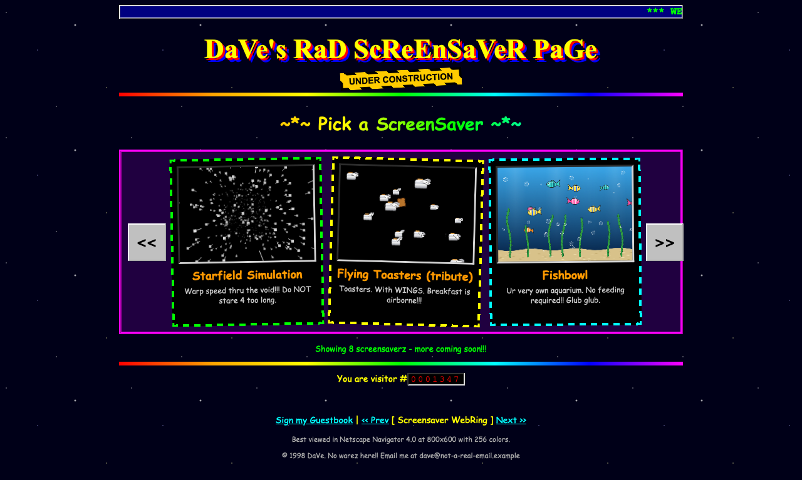
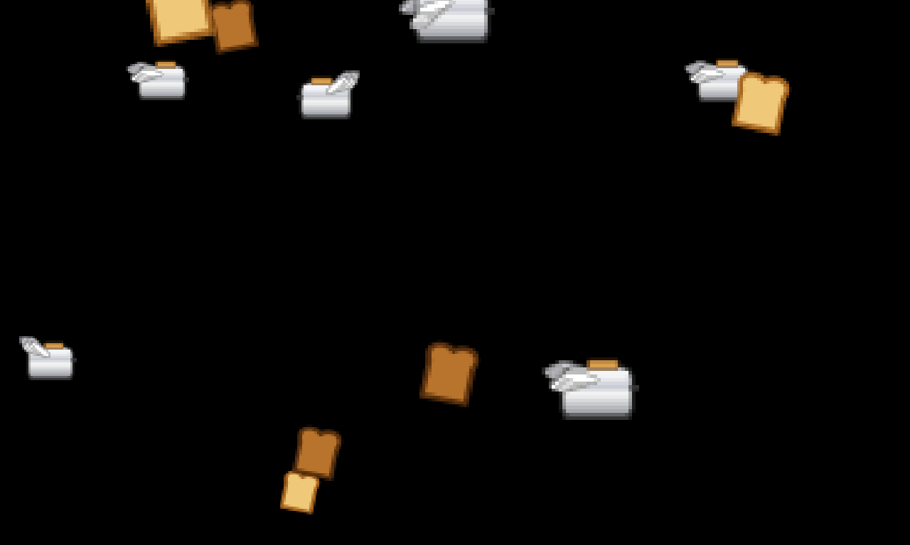
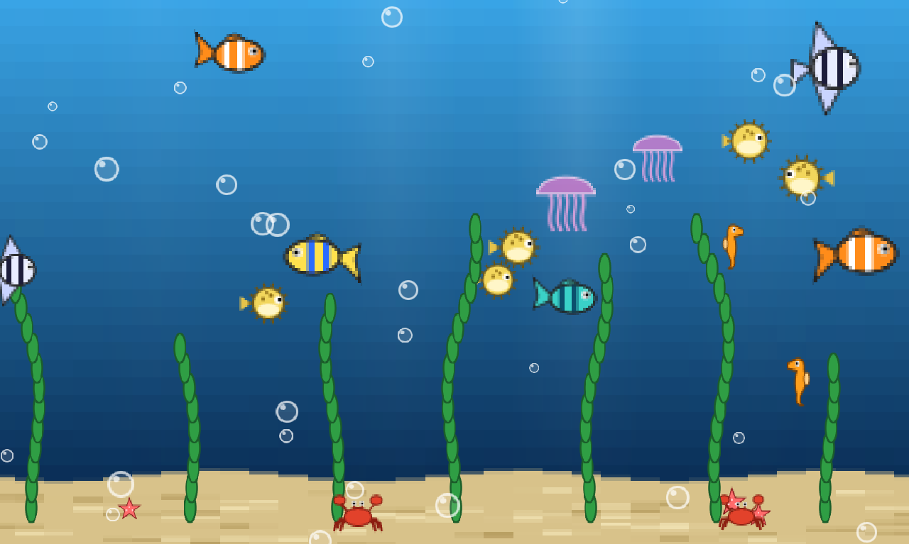
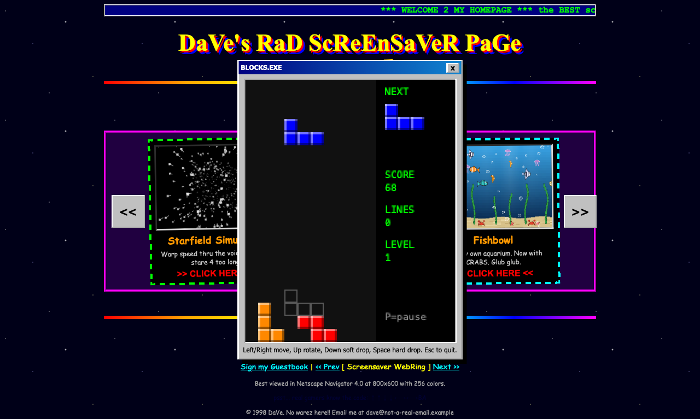

I gave Claude Code its own disposable Mac through cuvm and set a hard 30-minute session limit. Inside the VM, it had shell and file tools, a project workspace, a local dev server, and a Playwright browser. I wanted to see whether I could give it a challenge.
30:00session limit
9screensavers
3easter eggs
Opus 5.5main model
99.8Koutput tokens
10.0Mcached input tokens read
≈$5.50estimated API cost
I used a Claude subscription. The dollar figure is an API-equivalent estimate, not a per-run bill. Token counts are Opus 5.5 totals; cached input is counted on each request.
Play with the screensaver site →
Best explored on desktop. The demo contains flashing text, animation, and optional sound.

Too easy
I asked it to make the old asteroids or starfield screensaver, put it in a carousel, and add more screensavers if it had time. The website should have that janky GeoCities or Myspace vibe. I told it the start time so it knew there was a limit.
What felt like two minutes later, I was looking at three screensavers in the carousel. This was no challenge.
I was going to suggest Flying Toasters, but it had already suggested that itself. If it was suggesting it, I figured that would be too easy too. So I also requested Fishbowl.
It built a sprite engine in what felt like another two minutes. WTF. That's pretty cool.
Then I asked for some enhancements:
- Less crisp sprites.
- Toasters that bounce off the sides.
- More aquatic diversity.
- Whales and sharks, appearing occasionally.




A few easter eggs
I stepped away for five to ten minutes. When I returned, I thought there were about ten minutes left, so I asked for three easter eggs: one of its choosing, Tetris, and Pong. The first will remain undisclosed.
All three exist, with time to spare.

Done before the clock
21:11:41 Me
anything else? roughl a minute remains
21:11:46 Claude
Nothing else is needed. Everything you asked for is built and checked, apart from the unchecked items I mentioned: the whale, the pipe colours and the MIDI audio.
21:11:49 Me
ty
21:11:51 Claude
You're welcome.The 30-minute limit ended the session at 21:12:11 UTC. Claude had already said it was done.
A five-second scare
Then I thought we'd lost the source. The harness reported no changes and had deleted the disposable Mac. That was a scare for about five seconds.
It had only been watching the fixture folder. Claude had built the site in a folder beside it. The transcript and screenshots survived, so we could reconstruct the site afterward. A fix for that collection gap is in review.
Run notes
The clock, source, and run evidence
The recorded clock
The timings in the story are how I remember the session. The harness recorded a configured limit of 1,800 seconds, starting after startup and checks. Thinking, typing, and stepping away all used that same session time.
- Startup and checks
- 1m 15s
- Interactive session
- 30m 00s
- Collection and cleanup
- About 38s
- Entire run
- 31m 53s
The screensaver brief arrived at 20:47:50 UTC. Claude declared the work finished at 21:11:46 UTC and sent its final reply at 21:11:51 UTC. The harness closed the session at 21:12:11 UTC. Collection finished about 1.3 seconds after that; the remaining time went to cleanup and checks.
What the run preserved
The run preserved the conversation and tool results, 21 PNG screenshots saved by the agent, 41 browser page snapshots, console logs, and the second dev server's log. The transcript contains 188 unique tool calls. The original transcript and record remain local; the downloadable summary includes their SHA-256 hashes.
The source was reconstructed after the run by replaying its recorded file writes and edits, plus six inspected shell commands. This reproduces what the transcript says was written. It is not a copy or a hash-verified snapshot of the deleted guest's files.
The public summary contains selected timings, activity counts, usage estimates, and containment results. It leaves out host and network identifiers, credentials, raw transcripts, terminal logs, and certificate files. The four screenshots and the source ZIP were checked separately for publication.
The package manifest and dependency lockfile are missing because they were not reproduced by that replay. The demo was built afterward from the reconstructed source and runs as static files without installation; its asset paths were adjusted for hosting.
Inside the VM
The harness started Vite on loopback port 5173 in the fixture. Claude used its shell and file tools to build beside that fixture and started a second Vite server on port 5174, reusing the fixture's installed dependencies.
The egress proxy handled 180 API requests and swapped the guest's dummy token for the real credential on 170 of them. The real credential stayed on the host. It refused 77 connections, including 61 telemetry connections and two agent fetches to hosts outside the allowlist.
All 28 pre-run and 28 post-run checks passed, the golden image hash was unchanged, and the guest login was removed two seconds after the session closed. The record's 72 console-error mentions are a best-effort count from the console output the agent chose to inspect while debugging, not 72 distinct failures in the final site.
About the recovered demo
The original WebKit screenshots show Toasters and Fishbowl rendering. Both threw errors in a later Chromium check, while the other seven screensavers animated. Mobile browsers currently scale the desktop layout.
The harness recorded passing containment and cleanup checks. That PASS covers the boundary and lifecycle, not whether every feature works. I've also written about testing a firewall against my own prompt injection.
Recorded usage
For Opus 5.5, Claude Code recorded 99,837 output tokens, 9,995,317 cached input tokens read, 185,087 input tokens written to cache, and 5,260 other input tokens. These are totals across requests, not the size of a single context window. A small amount of Haiku usage is listed separately in the JSON summary.
Claude Code estimated $5.50 in API-equivalent usage across both models. The Opus portion matches the published rates: $4 for input, $20 for output, $0.20 for cache reads, and $8 for one-hour cache writes, per million tokens. I used a Claude subscription; this comparison is not a per-run bill or an allocation of my subscription cost.
We're adding Codex support so the Web Team can do the next experiment. :D